Evolution
Units 5–7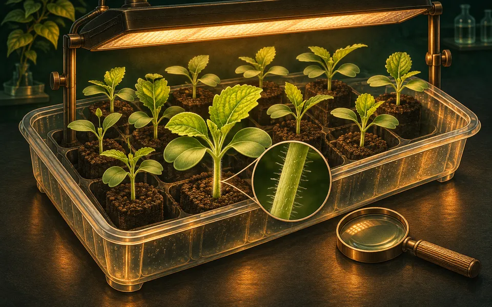
Investigation 1Artificial Selection
Time: 115 min (full lab) · Turn in: lab report. Can extreme selection change expression of a quantitative trait in a population in one generation? Count trichomes on Fast Plants, select parents, and grow the next generation.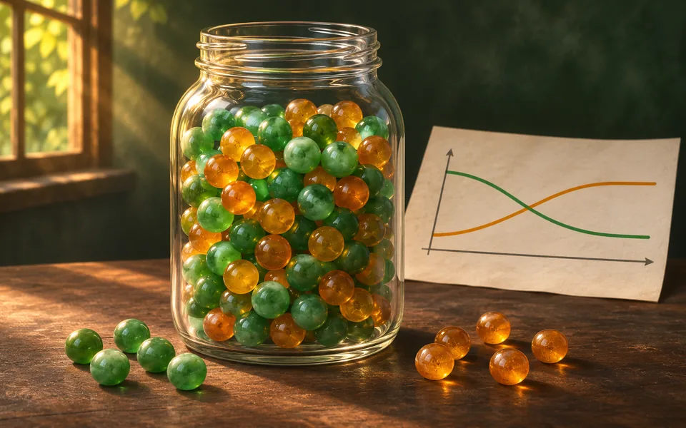
Investigation 2Mathematical Modeling: Hardy-Weinberg
Time: 130 min (full lab) · Turn in: lab report. How can mathematical models be used to investigate the relationship between allele frequencies in populations of organisms and evolutionary change? Spreadsheet-style model with selection, mutation, migration and drift.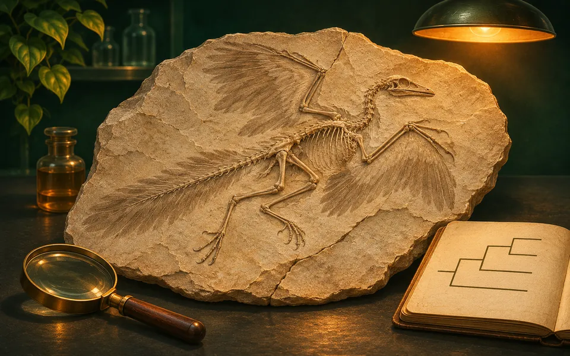
Investigation 3Comparing DNA Sequences with BLAST
Time: 150 min (full lab) · Turn in: lab report. How can bioinformatics be used as a tool to determine evolutionary relationships and to better understand genetic diseases? Build a cladogram, then align a mystery gene against a sequence database.Energetics
Units 2–3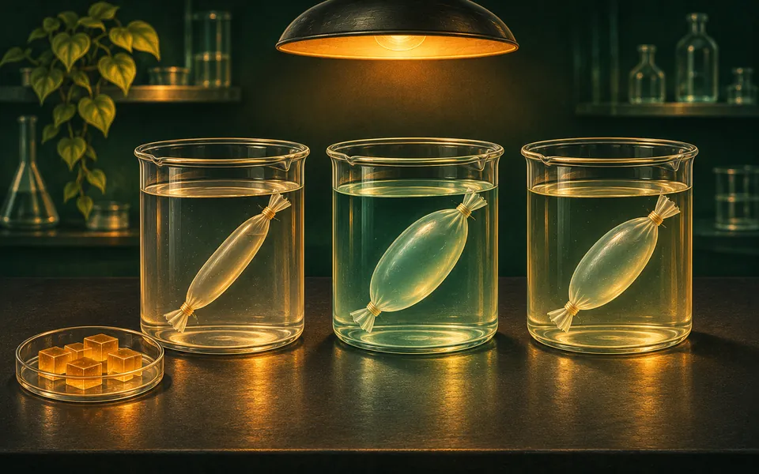
Investigation 4Diffusion and Osmosis
Time: 160 min (full lab) · Turn in: lab report. What causes my plants to wilt if I forget to water them? Agar cubes, dialysis-tube model cells, potato cores, and plasmolysis.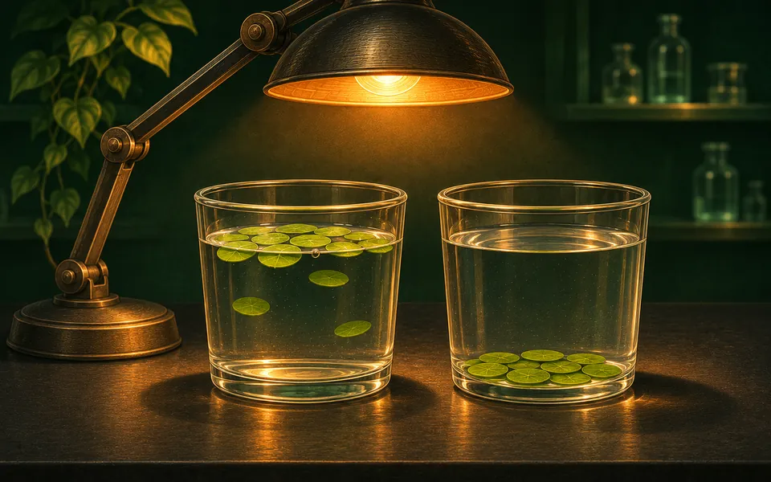
Investigation 5Photosynthesis
Time: 130 min (full lab) · Turn in: lab report. What factors affect the rate of photosynthesis in living leaves? Floating leaf disk assay under changing light, CO₂ and temperature.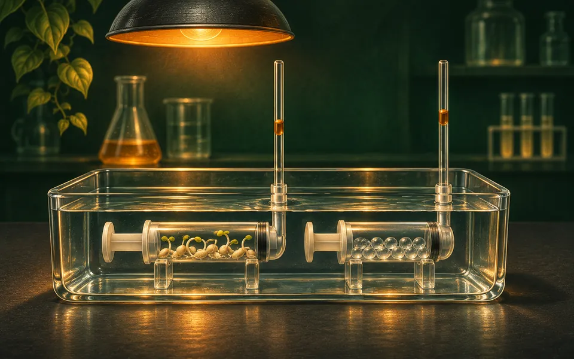
Investigation 6Cellular Respiration
Time: 130 min (full lab) · Turn in: lab report. What factors affect the rate of cellular respiration in multicellular organisms? Microrespirometers with germinating seeds, beads, and temperature.Information Storage and Transmission
Units 4–6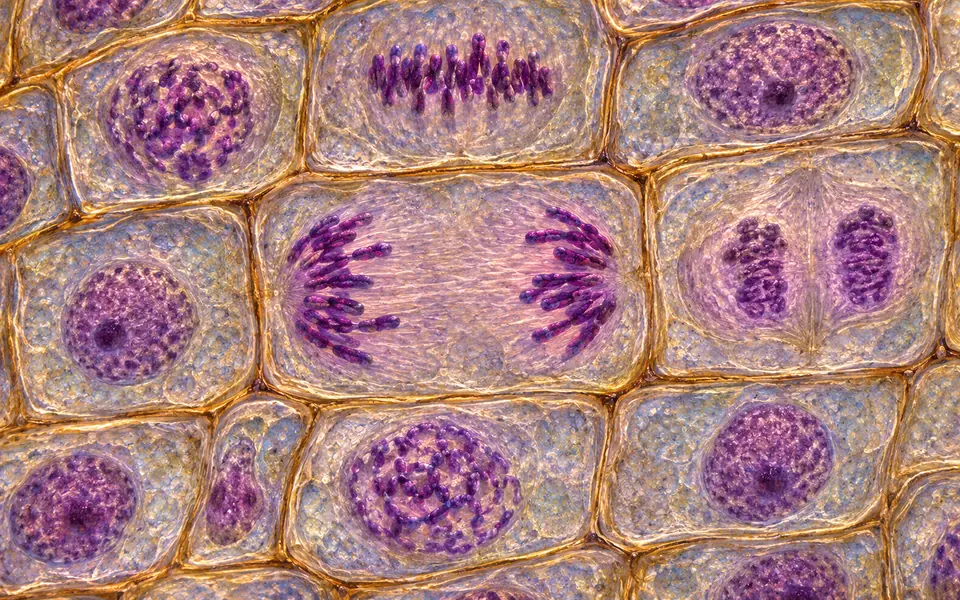
Investigation 7Cell Division: Mitosis and Meiosis
Time: 185 min (full lab) · Turn in: lab report. How do eukaryotic cells divide to produce genetically identical cells or to produce gametes with half the normal DNA? Onion root tip counts, chi-square, meiosis models, and Sordaria crossing over.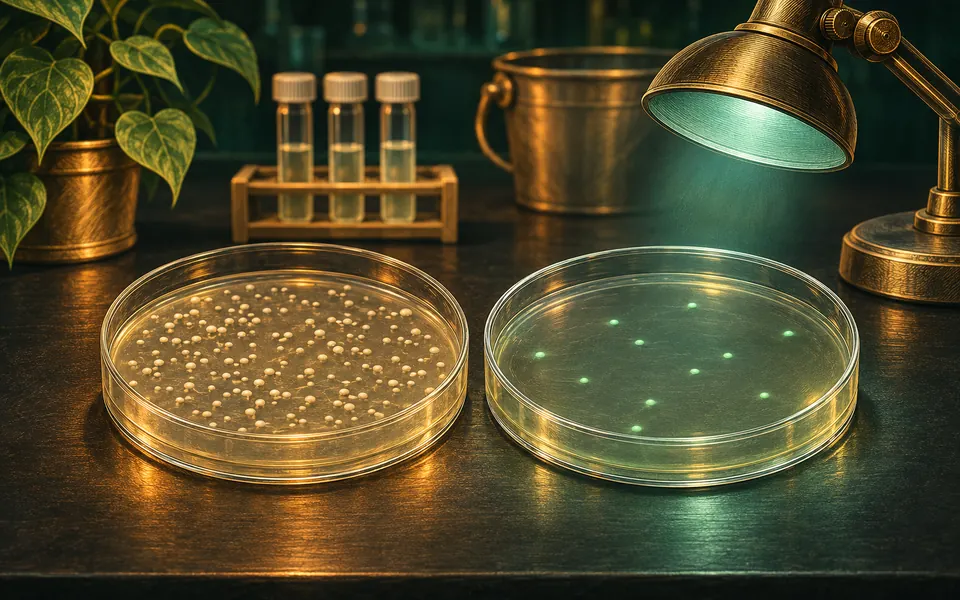
Investigation 8Bacterial Transformation
Time: 115 min (full lab) · Turn in: lab report. How can we use genetic engineering techniques to manipulate heritable information? pGLO transformation, heat shock, four plates, and transformation efficiency.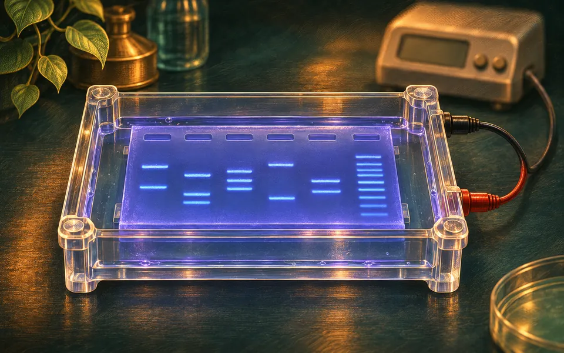
Investigation 9Restriction Enzyme Analysis of DNA
Time: 155 min (full lab) · Turn in: lab report. How can we use genetic information to identify and profile individuals? Digest lambda DNA, run a gel, and size fragments from a standard curve.Systems Interactions
Units 2, 6, 8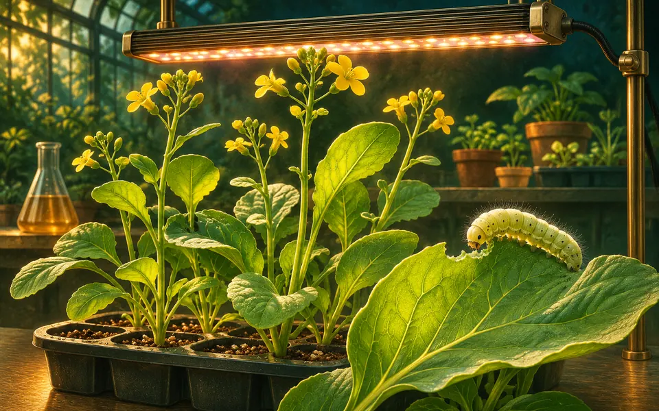
Investigation 10Energy Dynamics
Time: 130 min (full lab) · Turn in: lab report. What factors govern energy capture, allocation, storage, and transfer between producers and consumers in a terrestrial ecosystem? Fast Plant biomass and butterfly larvae energy budgets with a live energy-flow diagram.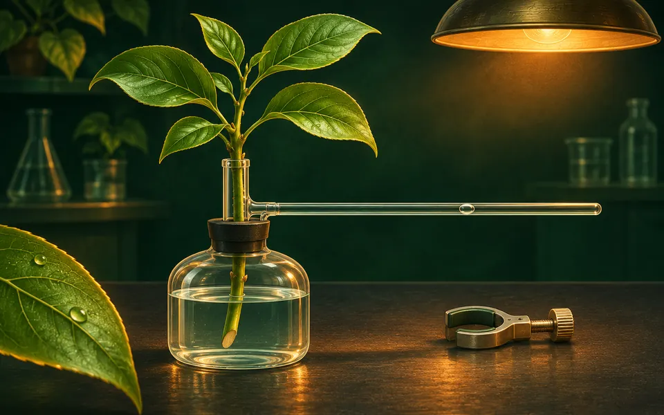
Investigation 11Transpiration
Time: 160 min (full lab) · Turn in: lab report. What factors, including environmental variables, affect the rate of transpiration in plants? Stomata peels under the microscope and whole-plant water loss.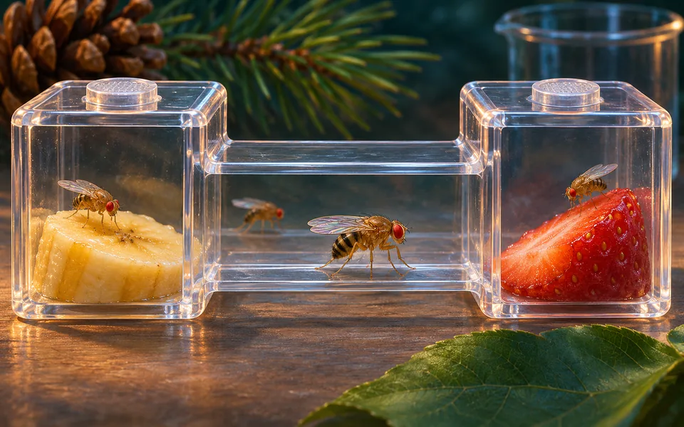
Investigation 12Fruit Fly Behavior
Time: 130 min (full lab) · Turn in: lab report. What environmental factors trigger a fruit fly response? A two-chamber choice test with live fly movement and chi-square.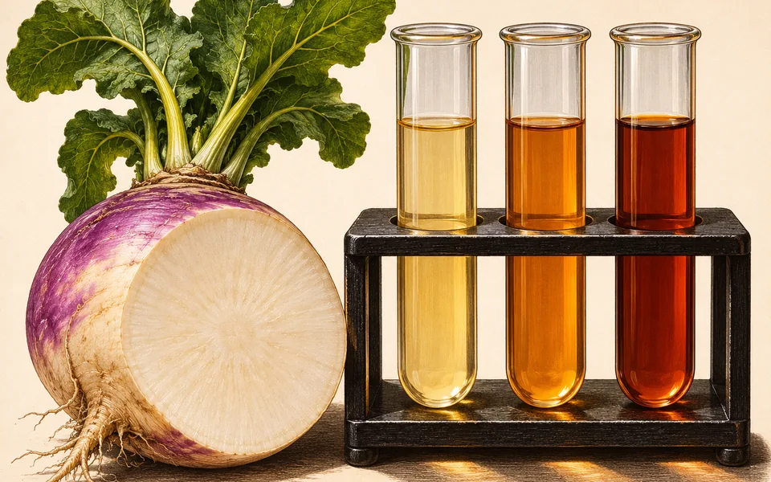
Investigation 13Enzyme Activity
Time: 135 min (full lab) · Turn in: lab report. How do abiotic or biotic factors influence the rates of enzymatic reactions? Turnip peroxidase and guaiacol color changes across pH, temperature and concentration.Teaching OpenSciEd Biology?
Explore interactive activities for OpenSciEd high school biology Units 1–5, from Serengeti ecosystems to Arctic bear hybridization.
Independent companions, not official OpenSciEd materials.
Using these free AP Biology labs
What do students do in each virtual lab?
Read the background, make predictions, run simulations, collect data, and explain the results. Each investigation follows the topics in the AP Biology investigative lab manual. Simulated results support classroom learning and do not replace wet-lab work where it is available.
Do students need accounts or installed software?
No paid accounts or installation are needed. The labs run in a browser with JavaScript enabled. Student names and work stay in that browser; use a progress file or transfer code to continue on another device. Read the privacy and classroom guide.
Can students print directions and submit reports?
Yes. Use the printable student directions for all 13 labs, then download a Word report or save a PDF from the lab’s Submit section. Students must hand in the file through the teacher’s assigned process. Start with the five-minute teacher setup guide.